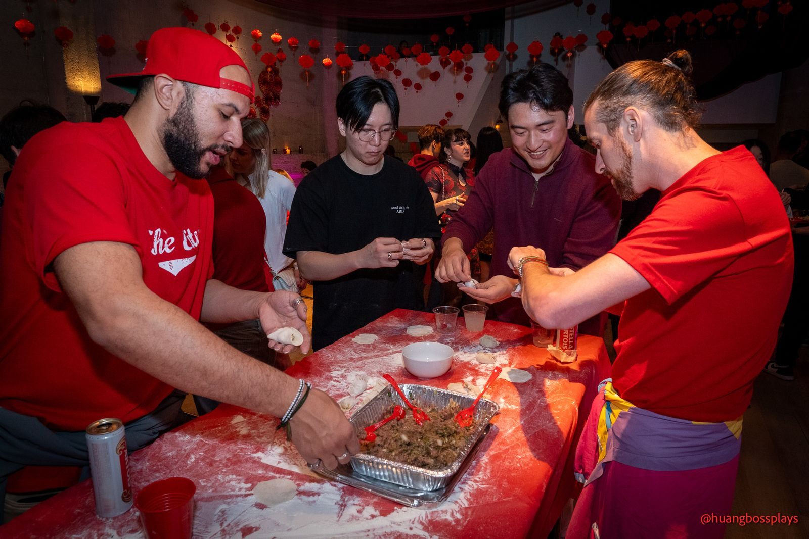

Photography
People, mostly. Portraits, parties, community nights and the occasional cat — shot between Taipei and San Francisco, 2023 → 2026.
Sony A7C · FE 50mm F1.8 · FE 24–105mm F4 G · 39 selects, ranked
01 · AmberCompanions · 2026
02 · Ring lightEvents · 2023
03 · Get out the voteEvents · 2026
04 · HallwayPortraits · 2026
05 · Under the vinesPortraits · 2026
06 · Hood upPortraits · 2026
07 · Mid-sentencePortraits · 2026
08 · MegaphoneBeach day · 2026
09 · Dumpling tableCommunity · 2026
10 · Red loungeCommunity · 2026
11 · Whole milkCompanions · 2023
12 · A toastEvents · 2026
13 · Match dayEvents · 2026
14 · FinialCompanions · 2023
15 · Street lightPortraits · 2026
16 · PastriesEvents · 2025
17 · LeisBeach day · 2026
18 · DuelBeach day · 2026
19 · Red roomCommunity · 2026
20 · NeonEvents · 2025
21 · Six at the barEvents · 2025
22 · BreadEvents · 2023
23 · Tongues outEvents · 2025
24 · Ice rinkEvents · 2026
25 · Fur hatsEvents · 2026
26 · Blue eyesCompanions · 2023
27 · SunniesEvents · 2025
28 · Step threeCommunity · 2026
29 · Four, under neonEvents · 2025
30 · Arms crossedEvents · 2025
31 · PointingEvents · 2025
32 · StickersEvents · 2025
33 · Baby girlEvents · 2025
34 · From aboveEvents · 2025
35 · The whole barEvents · 2025
36 · FiveEvents · 2025
37 · Green shotEvents · 2025
38 · Snake toyCompanions · 2023
39 · TreatCompanions · 2026
Click any photo to view it large · ← → to move · Esc to close

Events · portraits · Bay Area
Throwing something worth remembering? I shoot events and portraits around San Francisco.